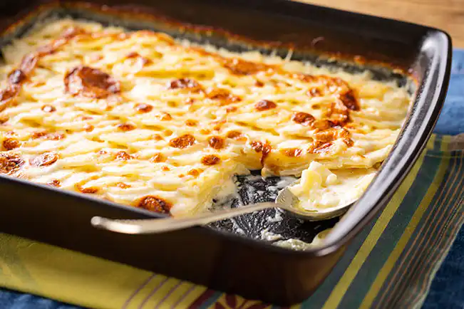

Batata Gratinada

A batata gratinada é um prato irresistível e sofisticado, perfeito para acompanhar diversas refeições. Feita com camadas de batatas macias, cozidas no creme de leite e temperadas com alho, noz-moscada, sal e pimenta, essa receita ganha um toque especial com a cobertura de queijo muçarela e parmesão, que derretem e formam uma crosta dourada e crocante no forno. O resultado é uma combinação cremosa por dentro e levemente crocante por fora, garantindo uma explosão de sabores a cada mordida. Fácil de preparar, esse prato é ideal para impressionar convidados em almoços e jantares especiais. 🍽️✨
Ingredientes
- 4 batatas médias
- 200ml de creme de leite
- 100g de queijo muçarela ralado
- 50g de queijo parmesão ralado
- 1 dente de alho picado
- 1 colher de sopa de manteiga
- Sal e pimenta a gosto
- Noz-moscada a gosto
Modo de preparo
- Preaqueça o forno a 180°C.
- Descasque e corte as batatas em rodelas finas.
- Em uma panela, derreta a manteiga e refogue o alho.
- Adicione o creme de leite, sal, pimenta e noz-moscada. Misture bem.
- Em um refratário untado, intercale camadas de batata e creme de leite.
- Finalize com os queijos por cima.
- Asse por 30 a 40 minutos até dourar.
- Sirva quente e aproveite!
Resultado:
